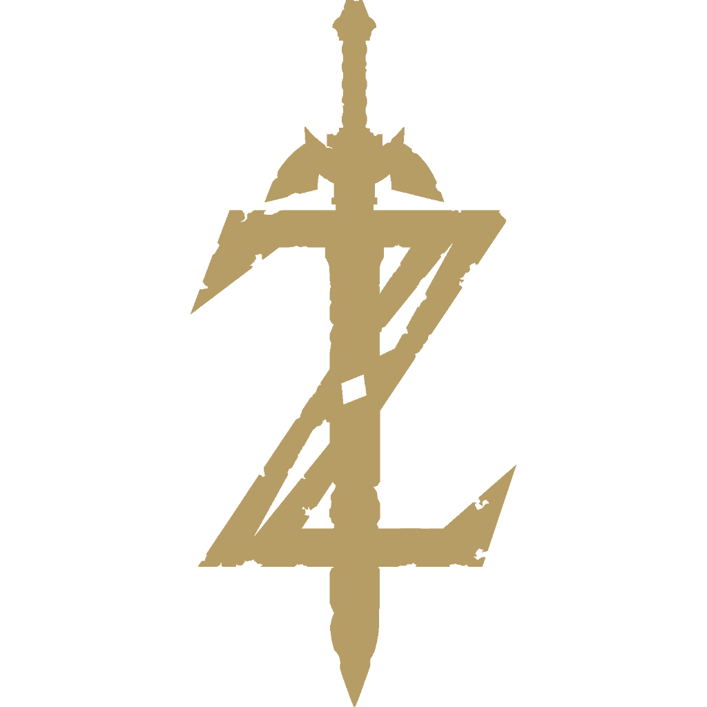

 The Legend of Zelda: Breath of the Wild
Details
 |
|
| Playtime | Not Played |
| Last Activity | Never |
| Added | 4/29/2025 6:52:38 |
| Modified | 4/29/2025 23:28:03 |
| Completion Status | Not Played |
| Library | Playnite |
| Source | |
| Platform | Nintendo Switch |
| Release Date | 3/3/2017 |
| Community Score | |
| Critic Score | 97 |
| User Score | |
| Genre | Action-adventure |
| Developer | Nintendo EPD |
| Publisher | Nintendo |
| Feature | Single Player |
| Links | Wikipedia Official website MobyGames IMDb |
| Tag | [People] artist: Satoru Takizawa [People] artist: Takumi Wada [People] composer: Hajime Wakai [People] composer: Manaka Kataoka [People] composer: Yasuaki Iwata [People] director: Hidemaro Fujibayashi [People] producer: Eiji Aonuma [People] programmer: Hiroshi Umemiya [People] programmer: Kenji Matsutani [People] programmer: Takuhiro Dohta [People] writer: Akihito Toda [People] writer: Naoki Mori |
Description
The Legend of Zelda: Breath of the Wild is a 2017 action-adventure game developed and published by Nintendo. Set at the end of the Zelda timeline, the player controls an amnesiac Link as he sets out to save Princess Zelda and prevent Calamity Ganon from destroying the world. Players explore the open world of Hyrule while they collect items and complete objectives such as puzzles and side quests. Breath of the Wild's world is unstructured and encourages exploration and experimentation; the story can be completed in a nonlinear fashion. Released on March 3, 2017, for the Wii U and Nintendo Switch, Breath of the Wild was first planned as a 2015 Wii U exclusive before becoming a launch game for the Switch.
Development lasted five years, commencing immediately after the release of The Legend of Zelda: Skyward Sword in 2011. Led by director Hidemaro Fujibayashi and producer Eiji Aonuma, Nintendo sought to rethink Zelda's conventions and introduced elements such as detailed chemistry and physics engines. The designers drew inspiration from Shadow of the Colossus (2005) and The Elder Scrolls V: Skyrim (2011). Monolith Soft, known for their work on the open-world Xenoblade Chronicles series, assisted in designing landscapes and topography.
Breath of the Wild is the best-selling Zelda game and one of the best-selling video games of all time, with 34.32 million copies sold as of December 2024. It is considered one of the greatest video games of all time, with it winning several Game of the Year awards. Critics described it as a landmark in open-world design for its emphasis on experimentation, physics-based sandbox, and emergent gameplay. Numerous developers cited Breath of the Wild as inspiration, and it is a popular point of comparison among open-world games. A spin-off, Hyrule Warriors: Age of Calamity, was released in 2020, while a sequel, Tears of the Kingdom, was released in 2023. An enhanced edition of the game will be released for the Nintendo Switch 2.
Gameplay
Breath of the Wild is an open-world action-adventure game. Players are tasked with exploring the kingdom of Hyrule while controlling Link. Breath of the Wild encourages nonlinear gameplay, which is illustrated by the lack of defined entrances or exits to areas, scant instruction given to the player, and encouragement to explore freely. Breath of the Wild introduces a consistent physics engine to the Zelda series, letting players approach problems in different ways rather than trying to find a single solution. The "chemistry engine" defines the physical properties of most objects and governs how they interact with the player and one another. For example, during thunderstorms, metal objects will attract powerful lightning strikes; during a storm, therefore, a player must be careful not to carry metal, but may also throw metal objects at enemies to draw lightning to them. These design approaches result in a generally unstructured and interactive world that rewards experimentation and allows for nonlinear completion of the story.
As Link, players can perform actions such as running, climbing, swimming, and gliding with a paraglider, although Link is limited by his stamina. Link can procure items from the environment, including weapons, food, and other resources. Unlike in previous Zelda games, weapons and shields degrade through use, eventually shattering. Many items have multiple uses; for example, wooden weapons can light fires, wooden shields can collect incoming enemy arrows, and shields can be used as makeshift snowboards. Players can obtain food and materials for elixirs from hunting animals, gathering wild fruit, or collecting parts of defeated enemies. By cooking combinations of food or materials, the player can create meals and elixirs that can replenish Link's health and stamina, or provide temporary status bonuses such as increased strength or resistance to heat or cold. An important tool in Link's arsenal is the "Sheikah Slate", a magical stone tablet which can be used to mark waypoints on the in-game map and take pictures of materials, creatures, and enemies. These pictures are stored in an in-game compendium that can be used to locate valuable items. The Sheikah Slate also gives the player the ability to create remote bombs, manipulate metal objects, form ice blocks on watery surfaces, and temporarily stop objects in time. In combat, players can lock onto targets for more precise attacks, while certain button combinations allow for advanced offensive and defensive moves. Players may also defeat enemies without weapons, such as by rolling boulders off cliffs into enemy camps.
Besides exploration, players can undergo quests or challenges to obtain certain benefits. Activating towers and shrines will add waypoints to the map that the player may warp to at any time. Activating towers also adds territories to the map, although location names are not added until the player explores that area. Dotted throughout Hyrule are shrines that contain challenges ranging from puzzles to battles against robotic opponents. Clearing shrines earns Spirit Orbs; after earning four of these orbs, they can be traded for additional health or stamina points. When Link has at least 13 hearts, he can reclaim the Master Sword in the Korok Forest. The Master Sword is the only unbreakable weapon in the game, but it can run out of energy after extended use, requiring a 10-minute recharge. In addition to shrines, the Divine Beasts, giant mechanical animals, act as extended puzzles, each based around a unique animal and element. Scattered across Hyrule are small puzzles that reveal Korok Seeds, which can be traded to expand inventory size for weapons, shields, and bows. Towns serve as hotspots for quests, sidequests, and shops selling materials and clothing. Hikers and other travelers offer sidequests, hints, or conversation. Additionally, players can scan Amiibo figures against their controller to summon items or call Link's horse Epona from previous Zelda games and Wolf Link from The Legend of Zelda: Twilight Princess.
Plot
Breath of the Wild takes place at the end of the Zelda timeline in the kingdom of Hyrule. In ancient times, the ancient Sheikah race had developed Hyrule into an advanced civilization, protected by four enormous animalistic machines called the Divine Beasts and an army of autonomous weapons called Guardians. When an ancient evil known as Calamity Ganon appeared and threatened Hyrule, four great warriors were given the title of Champion, and each piloted one of the Divine Beasts to weaken Ganon while the princess with the blood of the goddess and her appointed knight fought and defeated him by sealing him away.
Ten millennia later, the kingdom of Hyrule had since regressed to a medieval state. Reading their ancestors' prophecies, Hyrule's peoples recognized the signs of Ganon's return and excavated surrounding areas to uncover the Divine Beasts and Guardians. During this time, Princess Zelda trained vigorously to awaken the sealing magic needed to defeat Ganon while trying to maintain her personal research. In the meantime, a knight was appointed to protect her: Link, a Hylian who was chosen due to his ability to wield the Master Sword, also known as "the sword that seals the darkness". After being sought out by Zelda, the Champions—Mipha, princess of the aquatic Zora; Revali, archer of the birdlike Rito; Daruk, warrior of the mountainous Gorons; and Urbosa, chief of the desert-dwelling Gerudo—assembled to pilot the Divine Beasts (Vah Ruta, Vah Medoh, Vah Rudania, and Vah Naboris, respectively) while Zelda and Link would face Ganon directly.
However, when Ganon appeared on Zelda's seventeenth birthday, he possessed the Guardians and Divine Beasts, turning them against Hyrule. King Rhoam and the Champions were killed, much of the kingdom was laid to waste, and Link was gravely wounded protecting Zelda while on their way to Fort Hateno. Zelda unlocked her sealing powers, using them to save Link. Zelda had Link taken to safety for him to heal, hid the Master Sword in Korok Forest under the protection of the Great Deku Tree, and used her light magic to seal herself and Ganon in Hyrule Castle. This cataclysmic tragedy came to be known over time as the Great Calamity.
A century after being placed in a healing chamber in the Shrine of Resurrection, an amnesiac Link awakens in a now-ravaged Hyrule. He meets an old man, who eventually reveals himself as the lingering spirit of King Rhoam. Rhoam explains that Ganon, sealed in Hyrule Castle, has grown stronger; he pleads for Link to defeat Ganon before he regains his full strength, breaks free, and destroys the world.
Link reunites with Impa, a Sheikah elder who previously served the royal family, and she instructs him to free the Divine Beasts. Link travels across Hyrule, returning to locations from his past and regaining his memories. At the behest of Hyrule's peoples, he boards the four Divine Beasts and purges them of the Blight Ganons, freeing the captive spirits of Hyrule's fallen Champions and allowing them to pilot the Divine Beasts once again. After freeing the Champion's spirits, they each gift Link an ability. Mipha gives him Mipha's Grace, a healing ability, Revali gives Revali's Gale, a flight-giving ability, Daruk, gives Daruk's Protection, which grants immunity to attacks, and Urbosa, gifts him Urbosa's Fury, allowing Link to create lightning. In this endeavor, Link is assisted by Sidon, the Zora prince and Mipha's younger brother; Yunobo, Daruk's cowardly descendant; Teba, a Rito warrior; and Riju, the child chief of the Gerudo. After obtaining the Master Sword from Korok Forest, Link enters Hyrule Castle and confronts Ganon. The Divine Beasts weaken him, and after Link defeats him, he transforms into Dark Beast Ganon in an attempt to destroy the world. Zelda gives Link the Bow of Light, which allows him to weaken Ganon enough for Zelda to seal him away, restoring peace and allowing the spirits of King Rhoam and the Champions to depart to the afterlife. Sensing their presence, Link and Zelda smile fondly.
If players have found all thirteen memories in the "Captured Memories" main quest, they unlock a post-credits cutscene in which Zelda declares that Hyrule must be rebuilt and that she and Link must begin the process by themselves. As Link and Zelda survey Hyrule and embark to restore it to—and perhaps beyond—its former glory, the princess confides in him that although her powers may have dwindled over time, she has come to terms with it.
Development
Nintendo EPD, an internal division of Nintendo, developed Breath of the Wild for the Nintendo Switch and Wii U. According to series producer Eiji Aonuma, the development team aimed to "rethink the conventions of Zelda". Development started immediately upon the release of The Legend of Zelda: Skyward Sword (2011). Aonuma received comments from players who wished to see a more interconnected map to explore the locales between the gameplay areas. In 2013, Nintendo experimented with nonlinear gameplay in The Legend of Zelda: A Link Between Worlds, which was a common point of praise from many outlets. At E3 2014, Aonuma said he planned to reform dungeons and puzzles, two of the series' major gameplay elements, and redesign the game to allow players to reach the end without progressing through the story. As Nintendo had never developed an open-world game on the scale of Breath of the Wild, they looked at The Elder Scrolls V: Skyrim and Shadow of the Colossus, the latter of which had some similar climbing mechanics and whose creator, Fumito Ueda, was friends with Aonuma. For the art style, the team drew inspiration from various Japanese anime which they had grown up watching, suspected to include Studio Ghibli and Hayao Miyazaki productions, among other anime. The protagonist, Link, was redesigned, with Aonuma purposely making him more gender neutral so that players could more easily relate to him.
Before full development, the developers designed a playable 2D prototype similar to the original Zelda to experiment with physics-based puzzles. The final game uses a modified version of the Havok physics engine. At the 2017 Game Developers Conference, director Hidemaro Fujibayashi, technical director Takuhiro Dohta, and art director Satoru Takizawa held a presentation titled "Change and Constant – Breaking Conventions with The Legend of Zelda: Breath of the Wild", during which they demoed the prototype. Aonuma called the physics engine in Breath of the Wild a major development for the Zelda series, saying that it "underpins everything in the world" and makes things operate in a "logical and realistic way", allowing players to approach puzzles and problems in different ways. He expanded on the difficulty in developing this system, recalling how one day during development he entered a game area and found that all the objects had been blown away by the wind. In the early stage of development, the game was to include "double hookshots", a variation of the hookshot present in previous Zelda games, that would let players swing "like Spider-Man". It ended up being removed after the developers found it gave the player too much mobility and broke the climbing mechanic. As previous Zelda games increased the amount of actions Link could perform, the development team realized that having too many actions would complicate the controls, so instead of adding more actions, they increased the number of events the player could interact with in the world.
Breath of the Wild was built and demonstrated with touchscreen features for the Wii U, but the developers found that "looking back and forth between the GamePad and the screen" was a distraction. The features were removed when the game moved to tandem development across the Switch and Wii U. The Wii U GamePad also affected animation; although Link is left-handed in earlier games, he is right-handed in Breath of the Wild to match the GamePad's control scheme, which has its sword-swinging buttons on its right side. The Switch version performs better than the Wii U release when docked to a television, although when undocked, both run at the same resolution. The Switch version also has higher-quality environmental sounds. Certain ideas, such as flying and underground dungeons, were not implemented due to the Wii U's limitations, and were instead used in the sequel. Aonuma said the art design was inspired by gouache and en plein air art to help identify the vast world. Takizawa has also cited the Jōmon period as an inspiration for the ancient Sheikah technology and architecture, due to the mystery surrounding the period. The landscape was based on locations in and around Kyoto, the hometown of the director, Hidemaro Fujibayashi, and was partially designed by Monolith Soft, who assisted with topographical level design. The initial area was made a plateau so that players can see the world's expansive environments.
Breath of the Wild was the first main Zelda game to use voice acting in cutscenes, although Link remains a silent protagonist. Aonuma was affected by the first time he heard a character with a human voice in-game, and wanted to leave a similar impression on players. The team decided to record voice-overs for all cutscenes instead of only the key scenes, as originally planned. Nintendo provided voice-overs and subtitles in eight languages. Initially, players were not able to mix and match the languages of voices and subtitles, but Nintendo later released an update in May 2017 that allowed players to choose the voice-over language. After five years of development, the game went gold, with Nintendo holding a wrap party to celebrate. Coinciding with the launch in Taiwan and South Korea in early 2018, Nintendo introduced a patch worldwide adding traditional and simplified Chinese and Korean translations for the Nintendo Switch version.
The original score was composed by Manaka Kataoka, Yasuaki Iwata, and Hajime Wakai. Kataoka and Wakai had previously worked on the Zelda games Spirit Tracks and The Wind Waker respectively. The soundtrack was primarily written and performed on a piano, with a focus on ambient music and sounds rather than melodic and upbeat music as seen in previous Zelda games. According to Wakai, this helped add "authenticity" to the environments and was taken on as a challenge by the rest of the sound team.
Release
Aonuma announced the game for the Wii U in January 2013, during a Nintendo Direct presentation. He said it would challenge the series' conventions, such as the requirement that players complete dungeons in a set order. The next year, Nintendo introduced the high-definition, cel-shaded visual style with in-game footage at its E3 press event. Once planned for release in 2015, the game was delayed early in the year and did not show at that year's E3. A Wii U version was later confirmed to be released despite the development of Nintendo's next console, the Nintendo Switch. It was delayed again in April 2016 due to problems with its physics engine. In the same year, Nintendo let attendees play the Wii U version at the E3 convention held in June, where they also announced its subtitle, Breath of the Wild. It was listed among the best games at E3 by several publications.
Breath of the Wild launched for both the Wii U and Switch on March 3, 2017. It was the last Nintendo game released for the Wii U. The Switch version was available in limited "Special Edition" and "Master Edition" bundles, which both included a Sheikah Eye coin, a Calamity Ganon tapestry with world map, a soundtrack CD, and a themed carrying case for the Switch. The Master Edition also included a figurine based on the Master Sword. An "Explorer's Edition" was released for the Switch on November 23, containing a two-sided map and a 100-page book of story information. In Europe, the game used unique packing artwork. A five-disc, 211-track soundtrack was released in Japan on April 25, 2018.
An enhanced edition of the game was announced for the Nintendo Switch 2, which will feature improved resolution, higher framerate and HDR support as well as additional functionality with the Nintendo Switch Online app.
Downloadable content
Throughout 2017, Nintendo released two packs of downloadable content (DLC) via an "expansion pass": The Master Trials and The Champions' Ballad. The Master Trials, released in June, adds gameplay modes, features, and items. In the "Trial of the Sword" challenge, the player faces three trials, consisting of twelve, sixteen, and twenty-three rooms respectively. Each room is full of enemies which the player must defeat before proceeding. Every room must be completed before the player can claim their reward. The player begins with no equipment and will lose all progress if they receive a game over. At the end of each trial the player's Master Sword has its attack power upgraded by ten points and the blue sheen of its blade grows slightly. By the end of the third trial, the Master Sword will have doubled in attack power and will glow blue. The pack also adds an optional higher difficulty level, Master Mode, which adds faster rank leveling and raises the ranks of enemies by 1. The enemies are more perceptive when Link sneaks near them and slowly regenerate health in battle. New floating platforms throughout the land offer enemies to battle and treasure as a reward. The Hero's Path feature draws the player's path on the map, designed to help players determine places they have not visited. The player can also find the hidden Travel Medallion to save Link's current position as a single waypoint to which the player can transport Link at any time. New items include the Korok Mask, which alerts the player when a Korok is nearby, and other themed cosmetics related to previous Zelda games.
The Champions' Ballad was released in December. It added a new dungeon, additional story content, new gear, and additional challenges, as well as the Master Cycle Zero, a motorcycle-like vehicle that Link can ride upon completing the quest line.
A complete "Expansion Pass" edition, containing all DLC on the game card, was released exclusively in Japan on October 8, 2021.
Reception
Breath of the Wild received "universal acclaim", according to the review aggregator website Metacritic. It is the highest-rated of 2017 on Metacritic, and holds the largest number of perfect reviews of any game from any year. Several critics called it a masterpiece.
The open-world gameplay received praise. Jose Otero of IGN described it as "a masterclass in open-world design" and "a wonderful sandbox full of mystery, dangling dozens upon dozens of tantalizing things in front of you that just beg to be explored". GameSpot called it the most impressive game Nintendo had made, writing that it "takes designs and mechanics perfected in other games and reworks them for its own purposes to create something wholly new, but also something that still feels quintessentially like a Zelda game ... It's both a return to form and a leap into uncharted territory, and it exceeds expectations on both fronts". Edge wrote that the world was "an absolute, and unremitting, pleasure to get lost in" and that "the magic of being given all the tools in the opening hour is the knowledge that the solution to any problem is already at your disposal, and you can always change tack". According to Digital Trends, the ability to climb any surface and glide across the map gave players freedom of movement that "broke the genre open, pushing developers to rethink how players interact with the world" and putting extra thought into vertical design. In contrast to "Ubisoft-style" games that filled the map with points of interest and objectives, Breath of the Wild's free-form exploration encourages players to set their own objectives, marking the map with discoveries that serve as a record of what players have accomplished.
According to Kyle Orland of Ars Technica, the open-world design reinvented Zelda formula, in comparison to other entries of the franchise. Journalists commented on unexpected interactions between game elements, with serendipitous moments proving popular on social media. Chris Plante of The Verge predicted that whereas prior open-world games tended to feature prescribed challenges, Zelda would influence a new generation of games with open-ended problem-solving. Digital Trends wrote that the level of experimentation allowed players to interact with and exploit the environment in creative ways, resulting in various "tricks" still discovered years after release.
Reviewers lauded the sense of detail and immersion. Kotaku recommended turning off UI elements in praise of the indirect cues that contextually indicate the same information, such as Link shivering in the cold or waypoints appearing when using the scope. Reviewers also commented on the unexpected permutations of interactions between Link, villagers, pets, and enemies, many of which were shared widely on social media. A tribute to former Nintendo president Satoru Iwata, who died during development, also attracted praise.
James Stephanie Sterling was more critical than most, giving Breath of the Wild a 7/10 score, criticizing the difficulty, weapon durability, and level design, but praising the open world and variety of content. Other criticism focused on the unstable frame rate and the low resolution of 900p; updates addressed some of these problems.
Sales
Breath of the Wild broke sales records for a Nintendo launch game in multiple regions. In Japan, the Switch and Wii U versions sold a combined 230,000 copies in the first week of release, with the Switch version becoming the top-selling game released that week. In the UK, Breath of the Wild was the second-bestselling retail game its week of release behind Horizon Zero Dawn, and became the third-bestselling Zelda game behind The Wind Waker and Twilight Princess. In the United States, Breath of the Wild was the second-bestselling video game during its month of release behind Tom Clancy's Ghost Recon Wildlands. Nintendo reported that Breath of the Wild sold more than one million copies in the US that month—925,000 of which were for Switch, outselling the Switch itself. Nintendo president Tatsumi Kimishima said that the attach rate on the Switch was "unprecedented". Breath of the Wild had sold 32.62 million copies on the Switch by December 2024 and 1.70 million copies on the Wii U by December 2020.
Following its demonstration at E3 2016, Breath of the Wild received several accolades from the Game Critics Awards and from publications such as IGN and Destructoid. It was listed among the best games at E3 by Eurogamer, GameSpot, and GamesRadar+. In late 2016, Breath of the Wild received two awards at Gamescom, and won the award for Most Anticipated Game at the Game Awards 2016.
After its release, Breath of the Wild won multiple awards at the Game Awards 2017, including Game of the Year, Best Game Direction, and Best Action/Adventure Game, and was nominated for Best Art Direction, Best Score/Music, and Best Audio Design. At the 21st Annual D.I.C.E. Awards, the Academy of Interactive Arts & Sciences awarded Breath of the Wild with Game of the Year, Adventure Game of the Year, Outstanding Achievement in Game Direction, and Outstanding Achievement in Game Design. Industry publications including IGN, GameSpot, Polygon, Entertainment Weekly, Eurogamer, Electronic Gaming Monthly, GamesRadar+, and Game Informer ranked Breath of the Wild the best game of 2017. According to Metacritic, Breath of the Wild topped 18 lists of the decade's best games, more than any other game of the 2010s. It also ranked highly in several lists of the greatest video games, including The Guardian, IGN, Edge Magazine, and Famitsu. In a 2021 poll conducted by TV Asahi, polling over 50,000 Japanese users, Breath of the Wild was voted the best console game of all time, above Dragon Quest V at number two. A 2023 poll conducted by GQ Magazine which surveyed a team of video game journalists across the industry ranked Breath of the Wild as the best video game of all time.
Legacy
Shortly after Breath of the Wild's release, journalists and video game industry figures discussed how it would influence future open-world games and the Zelda series. Benjamin Plich, designer of Assassin's Creed Unity and For Honor, said that he believed developers would take inspiration from its focus on experimental and emergent gameplay, such as "the ability to experiment with things more freely, in an open way" and having a sense of autonomy and experimentation with the environment and the tools at their disposal. Damien Monnier, designer of The Witcher 3: Wild Hunt, said Breath of the Wild managed to bring classic open world mechanics together while not relying on them to guide the player through its world, encouraging players to explore. Its "reactive physics" sandbox design was "a revelation for the open world genre at large" according to Screen Rant, and the game was noted for its experimental chemistry engine, emphasizing chemistry as much as physics. PC Gamer wrote that it set a new standard for its genre and the future games to come. It has been listed as the best game of all time by IGN, and GQ, whose list was advised by game developers, streamers, directors, writers and others across the world.
Multiple games and developers have cited Breath of the Wild as an inspiration. These include Genshin Impact, Ghost of Tsushima, Eternal Strands, Immortals Fenyx Rising, Telling Lies, Halo Infinite, Elden Ring, and Forspoken. Similarities have also been noted between Breath of the Wild and other open-world games since its launch, including Pokémon Legends: Arceus, Sonic Frontiers and Horizon Forbidden West. According to Digital Trends, Breath of the Wild has become a popular point of comparison among open world games. The success sparked increased interest in the Wii U emulator Cemu, as the Cemu developers rapidly updated the software to run Breath of the Wild at a steady frame rate within weeks of release. The ability to run the game in an emulator led to a thriving modding scene.
Hyrule Warriors: Age of Calamity, a hack and slash game in the style of Dynasty Warriors series, following 2014's Hyrule Warriors, is a spin-off of Breath of the Wild, with the story set 100 years before. It was released on November 20, 2020, on the Nintendo Switch.
Sequel
A sequel, titled The Legend of Zelda: Tears of the Kingdom, was released on May 12, 2023. Fujibayashi returned as the director. The game was conceived during planning for Breath of the Wild's DLC; the team came up with too many ideas, some of which could not be implemented due to technical constraints, and they were used for a new game. The sequel builds on the original's world with a new story and gameplay elements, and is inspired in part by Red Dead Redemption 2.